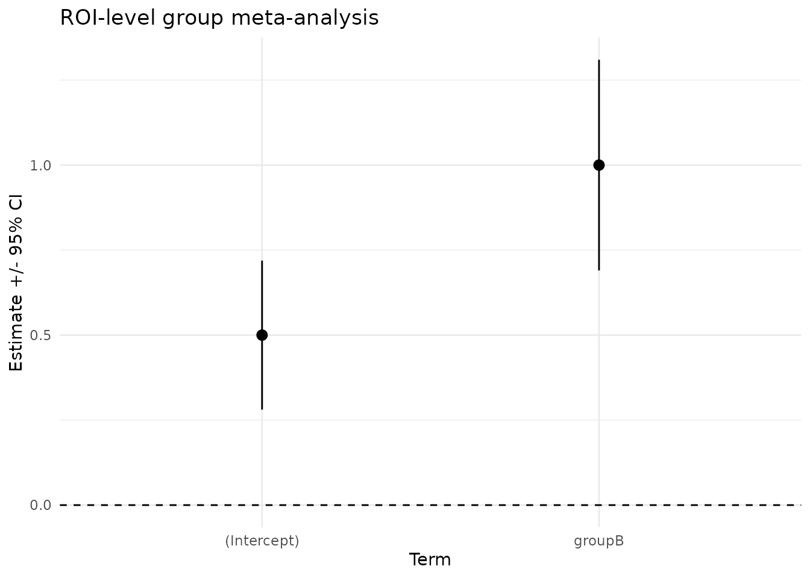
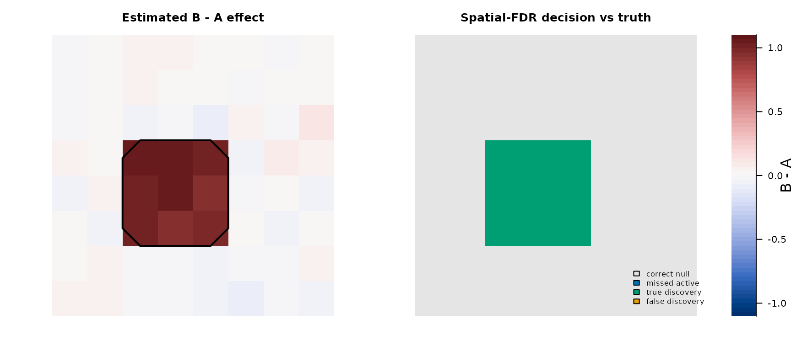

Group Analysis
Bradley R. Buchsbaum
2026-08-22
Source:vignettes/group_analysis.Rmd
group_analysis.RmdOverview
This vignette walks through a compact, end-to-end example of group analysis with fmrireg. We first construct a small ROI-level dataset to illustrate the basic meta-regression interface, and then move to a voxelwise example using tiny synthetic NIfTI files. Along the way we show how to compare groups with fixed- and random-effects meta-analysis, how to obtain exact contrasts either at fit-time or post-hoc by saving covariance, and how to perform group inference from t-maps alone using Stouffer, Fisher, or Lancaster combinations.
Create a small ROI dataset
We simulate 10 subjects across two groups (A/B) for a single ROI. Group B has an effect that is 1 unit larger than group A. All subjects have the same SE for clarity.
n_per_group <- 5
subjects <- sprintf("s%02d", 1:(2 * n_per_group))
group <- factor(rep(c("A", "B"), each = n_per_group))
beta <- ifelse(group == "A", 0.5, 1.5)
se <- rep(0.25, length(beta))
roi_df <- data.frame(
subject = subjects,
roi = "ExampleROI",
beta = beta,
se = se,
group = group,
stringsAsFactors = FALSE
)
gd <- fmrireg::group_data(
roi_df,
format = "csv",
effect_cols = c(beta = "beta", se = "se"),
subject_col = "subject",
roi_col = "roi",
covariate_cols = c("group")
)
gd
#> group_data (backed by gds)
#> GDS plan
#> adapter: tabular
#> source dims: 1 x 10 x 1 [sample x subject x contrast]
#> space: sample_labels n=1
#> assays: beta, se
#> nodes: 0Fit group meta-analysis
We first fit an intercept-only model, then a model including a group term.
fit_fe <- fmri_meta(gd, formula = ~ 1, method = "fe", verbose = FALSE)
fit_cov <- fmri_meta(gd, formula = ~ 1 + group, method = "fe", verbose = FALSE)
print(fit_cov)
#> fMRI Meta-Analysis Results
#> ==========================
#>
#> Method: fe
#> Robust: none
#> Formula: ~1 + group
#> Subjects: 10
#> Voxels analyzed: 1
#>
#> Heterogeneity:
#> Mean tau^2: 0
#> Mean I^2: 0 %
summary(fit_cov)
#> fMRI Meta-Analysis Summary
#> ==========================
#>
#> fMRI Meta-Analysis Results
#> ==========================
#>
#> Method: fe
#> Robust: none
#> Formula: ~1 + group
#> Subjects: 10
#> Voxels analyzed: 1
#>
#> Heterogeneity:
#> Mean tau^2: 0
#> Mean I^2: 0 %
#>
#> Coefficients:
#> (Intercept):
#> Mean effect: 0.5
#> Mean SE: 0.1118034
#> Significant:1/1 (100%)
#> groupB:
#> Mean effect: 1
#> Mean SE: 0.1581139
#> Significant:1/1 (100%)Note: With equal SE per subject, fixed-effects and random-effects
will yield similar point estimates. Random-effects
(method = "pm") will estimate between- subject
heterogeneity (tau2) when present.
fit_pm <- fmri_meta(gd, formula = ~ 1 + group, method = "pm", verbose = FALSE)
summary(fit_pm)
#> fMRI Meta-Analysis Summary
#> ==========================
#>
#> fMRI Meta-Analysis Results
#> ==========================
#>
#> Method: pm
#> Robust: none
#> Formula: ~1 + group
#> Subjects: 10
#> Voxels analyzed: 1
#>
#> Heterogeneity:
#> Mean tau^2: 0
#> Mean I^2: 0 %
#>
#> Coefficients:
#> (Intercept):
#> Mean effect: 0.5
#> Mean SE: 0.1118034
#> Significant:1/1 (100%)
#> groupB:
#> Mean effect: 1
#> Mean SE: 0.1581139
#> Significant:1/1 (100%)Extract coefficients and a contrast
coef_names <- colnames(fit_cov$coefficients)
group_term_roi <- grep("^group", coef_names, value = TRUE)
group_weights_roi <- setNames(as.numeric(coef_names == group_term_roi), coef_names)
con_roi <- contrast(fit_cov, group_weights_roi)
data.frame(
term = coef_names,
estimate = as.numeric(fit_cov$coefficients[1, ]),
standard_error = as.numeric(fit_cov$se[1, ])
)
#> term estimate standard_error
#> 1 (Intercept) 0.5 0.1118034
#> 2 groupB 1.0 0.1581139A quick visualization
We can visualize the group effects and their 95% CIs for the ROI-level fit.
df_tidy <- data.frame(
term = colnames(fit_cov$coefficients),
estimate = as.numeric(fit_cov$coefficients[1, ]),
std_error = as.numeric(fit_cov$se[1, ])
)
df_tidy$conf.low <- df_tidy$estimate - qnorm(0.975) * df_tidy$std_error
df_tidy$conf.high <- df_tidy$estimate + qnorm(0.975) * df_tidy$std_error
df_tidy
#> term estimate std_error conf.low conf.high
#> 1 (Intercept) 0.5 0.1118034 0.2808694 0.7191306
#> 2 groupB 1.0 0.1581139 0.6901025 1.3098975
ggplot(df_tidy, aes(x = term, y = estimate, ymin = conf.low, ymax = conf.high)) +
geom_pointrange() +
geom_hline(yintercept = 0, linetype = 2) +
labs(title = "ROI-level group meta-analysis",
x = "Term", y = "Estimate +/- 95% CI") +
theme_minimal()
Notes on voxelwise analysis
For voxelwise analysis, construct group_data with format
"nifti" or "h5":
# HDF5 (produced via write_results.fmri_lm)
# gd_h5 <- fmrireg::group_data(h5_paths, format = "h5",
# subjects = subject_ids,
# covariates = covariates_df,
# contrast = "ContrastName")
# NIfTI (provide per-subject paths for beta/SE or t)
# gd_nii <- fmrireg::group_data(list(beta = beta_paths, se = se_paths), format = "nifti",
# subjects = subject_ids,
# mask = "group_mask.nii.gz")
# fit <- fmri_meta(gd_h5, formula = ~ 1 + group, method = "pm")
# fit <- fmri_meta(gd_nii, formula = ~ 1, method = "fe")For multiple comparisons correction that leverages spatial structure,
see spatial_fdr() and create_3d_blocks().
Minimal NIfTI Example (Reproducible)
This chunk creates tiny synthetic NIfTI volumes on disk (in a temp dir) for a voxelwise demonstration. Group B has a higher effect in a small cube.
library(neuroim2)
set.seed(42)
tmpdir <- tempdir()
space <- NeuroSpace(c(8, 8, 8), spacing = c(2, 2, 2))
n_per_group <- 3
ids <- sprintf("sub-%02d", 1:(2 * n_per_group))
grp <- factor(rep(c("A", "B"), each = n_per_group))
active <- array(FALSE, dim = c(8, 8, 8))
active[3:5, 3:5, 3:5] <- TRUE
beta_paths <- character(length(ids))
se_paths <- character(length(ids))
for (i in seq_along(ids)) {
b <- array(0, dim = c(8, 8, 8))
b[active] <- if (grp[i] == "A") 0.5 else 1.5
b <- b + array(rnorm(length(b), sd = 0.05), dim = dim(b))
v_beta <- NeuroVol(b, space)
s <- array(0.25, dim = c(8, 8, 8))
v_se <- NeuroVol(s, space)
beta_paths[i] <- file.path(tmpdir, sprintf("%s_beta.nii.gz", ids[i]))
se_paths[i] <- file.path(tmpdir, sprintf("%s_se.nii.gz", ids[i]))
write_vol(v_beta, beta_paths[i])
write_vol(v_se, se_paths[i])
}
mask_path <- file.path(tmpdir, "mask.nii.gz")
write_vol(NeuroVol(array(1, dim = c(8, 8, 8)), space), mask_path)
gd_nii <- fmrireg::group_data(
list(beta = beta_paths, se = se_paths),
format = "nifti",
subjects = ids,
covariates = data.frame(group = grp),
mask = mask_path
)
fit_nii <- fmri_meta(gd_nii, formula = ~ 1 + group, method = "fe", verbose = FALSE)
fit_nii
#> fMRI Meta-Analysis Results
#> ==========================
#>
#> Method: fe
#> Robust: none
#> Formula: ~1 + group
#> Subjects: 6
#> Voxels analyzed: 512
#>
#> Heterogeneity:
#> Mean tau^2: 0
#> Mean I^2: 0 %
group_col <- grep("group", colnames(fit_nii$coefficients))
group_term_nii <- colnames(fit_nii$coefficients)[group_col]
pvals <- 2 * pnorm(-abs(fit_nii$coefficients[, group_col] / fit_nii$se[, group_col]))
sfr <- spatial_fdr(
fit_nii,
p = group_term_nii,
group = "blocks",
empirical_null = FALSE
)
active_voxels <- as.vector(active)
discovery_summary <- data.frame(
method = c("Uncorrected p < 0.05", "Spatial FDR, q < 0.05"),
discoveries = c(sum(pvals < 0.05), sum(sfr$reject)),
true_positives = c(sum(pvals < 0.05 & active_voxels), sum(sfr$reject & active_voxels)),
false_positives = c(sum(pvals < 0.05 & !active_voxels), sum(sfr$reject & !active_voxels))
)
knitr::kable(discovery_summary, caption = "Discoveries against the known active cube")| method | discoveries | true_positives | false_positives |
|---|---|---|---|
| Uncorrected p < 0.05 | 27 | 27 | 0 |
| Spatial FDR, q < 0.05 | 27 | 27 | 0 |
img_group_est <- coef_image(fit_nii, group_term_nii, statistic = "estimate")
range(as.array(img_group_est), na.rm = TRUE)
#> [1] -0.09585902 1.08515382
group_estimate_array <- array(
fit_nii$coefficients[, group_col], dim = c(8, 8, 8)
)
decision_class <- ifelse(
sfr$reject & active_voxels, 2L,
ifelse(sfr$reject & !active_voxels, 3L,
ifelse(active_voxels, 1L, 0L))
)
decision_array <- array(decision_class, dim = c(8, 8, 8))
slice_index <- 4L
effect_limit <- max(abs(group_estimate_array))
old_par <- par(no.readonly = TRUE)
layout(matrix(c(1, 2, 3), nrow = 1), widths = c(1, 1, 0.18))
par(mar = c(3, 3, 3, 1))
image(
group_estimate_array[, , slice_index],
zlim = c(-effect_limit, effect_limit),
col = hcl.colors(64, "Blue-Red 3"), axes = FALSE, asp = 1,
main = "Estimated B - A effect"
)
contour(active[, , slice_index], levels = 0.5, add = TRUE,
drawlabels = FALSE, lwd = 2)
image(
decision_array[, , slice_index],
breaks = c(-0.5, 0.5, 1.5, 2.5, 3.5),
col = c("gray90", "#0072B2", "#009E73", "#E69F00"),
axes = FALSE, asp = 1, main = "Spatial-FDR decision vs truth"
)
legend(
"bottomright",
legend = c("correct null", "missed active", "true discovery", "false discovery"),
fill = c("gray90", "#0072B2", "#009E73", "#E69F00"),
cex = 0.8, bty = "n", inset = 0.02
)
par(mar = c(3, 0.5, 3, 3))
scale_values <- seq(-effect_limit, effect_limit, length.out = 64)
image(
x = c(0, 1), y = scale_values,
z = matrix(rep(scale_values, each = 2), nrow = 2),
col = hcl.colors(64, "Blue-Red 3"), axes = FALSE,
xlab = "", ylab = ""
)
axis(4, at = pretty(c(-effect_limit, effect_limit), n = 5), las = 1)
mtext("B - A", side = 4, line = 2.2)
par(old_par)The black outline marks the known active cube. The decision panel distinguishes true discoveries from both missed active voxels and false discoveries rather than presenting a thresholded map without its simulation truth.
Because the subject-level SE maps define the reference variance in
this toy example, we use the theoretical null
(empirical_null = FALSE). Estimating an empirical null from
this deliberately under-dispersed background would rescale tiny null
fluctuations upward and obscure the intended multiple-testing
lesson.
Exact contrasts and stored covariance
You can request exact contrasts at fit-time or store per-voxel covariance for exact post-hoc contrasts.
fit_nii_pm <- fmri_meta(
gd_nii, formula = ~ 1 + group, method = "pm",
return_cov = "tri", verbose = FALSE
)
group_term_pm <- setdiff(colnames(fit_nii_pm$coefficients), "(Intercept)")
group_weights_pm <- setNames(
as.numeric(colnames(fit_nii_pm$coefficients) == group_term_pm),
colnames(fit_nii_pm$coefficients)
)
con <- contrast(fit_nii_pm, group_weights_pm)
contrast_summary <- data.frame(
region = c("Active cube", "Background"),
mean_estimate = c(mean(con$estimate[active_voxels]), mean(con$estimate[!active_voxels])),
mean_standard_error = c(mean(con$se[active_voxels]), mean(con$se[!active_voxels]))
)
knitr::kable(contrast_summary, digits = 4, caption = "Exact post-hoc B - A contrast")| region | mean_estimate | mean_standard_error |
|---|---|---|
| Active cube | 1.0108 | 0.2041 |
| Background | 0.0014 | 0.2041 |
fit_nii_con <- fmri_meta(
gd_nii, formula = ~ 1 + group, method = "pm",
contrasts = matrix(group_weights_pm, nrow = 1,
dimnames = list("B_minus_A", names(group_weights_pm))),
verbose = FALSE
)
fit_time_estimate <- fit_nii_con$contrasts$estimate[, 1]
fit_time_se <- fit_nii_con$contrasts$se[, 1]
fit_time_summary <- data.frame(
region = c("Active cube", "Background"),
mean_estimate = c(mean(fit_time_estimate[active_voxels]), mean(fit_time_estimate[!active_voxels])),
mean_standard_error = c(mean(fit_time_se[active_voxels]), mean(fit_time_se[!active_voxels]))
)
knitr::kable(fit_time_summary, digits = 4, caption = "Exact fit-time B - A contrast")| region | mean_estimate | mean_standard_error |
|---|---|---|
| Active cube | 1.0108 | 0.2041 |
| Background | 0.0014 | 0.2041 |
Two-sample t-test (Welch and OLS) on NIfTI
As an alternative to meta-analysis, we can run two-sample voxelwise t-tests directly on the per-subject beta maps, using either Welch’s unequal-variance test or a standard OLS/Student t-test via a simple design matrix.
fit_welch <- fmri_ttest(
gd_nii, formula = ~ 1 + group, engine = "welch", sign = "BminusA"
)
t_welch <- as.numeric(fit_welch$t["group", ])
df_welch <- as.numeric(fit_welch$df["group", ])
p_welch <- 2 * pt(abs(t_welch), df = df_welch, lower.tail = FALSE)
fit_ols <- fmri_ttest(
gd_nii, formula = ~ 1 + group, engine = "classic", sign = "BminusA"
)
t_ols <- fit_ols$t["group", ]
df_ols <- as.numeric(fit_ols$df["group", ])
p_ols <- 2 * pt(abs(t_ols), df = df_ols, lower.tail = FALSE)
timg_welch <- NeuroVol(array(NA_real_, dim = c(8, 8, 8)), space)
mask_img <- if (!is.null(gd_nii$mask_data)) gd_nii$mask_data else neuroim2::read_vol(mask_path)
timg_welch[as.array(mask_img) > 0] <- t_welch
range(as.array(timg_welch), na.rm = TRUE)
#> [1] -4.582865 81.539233
welch_called <- p_welch < 0.05
ols_called <- p_ols < 0.05
ttest_discovery_summary <- data.frame(
method = c("Welch", "OLS / Student"),
discoveries = c(sum(welch_called), sum(ols_called)),
true_positives = c(
sum(welch_called & active_voxels),
sum(ols_called & active_voxels)
),
false_positives = c(
sum(welch_called & !active_voxels),
sum(ols_called & !active_voxels)
)
)
knitr::kable(
ttest_discovery_summary,
caption = "Uncorrected p < 0.05 calls against known voxel truth"
)| method | discoveries | true_positives | false_positives |
|---|---|---|---|
| Welch | 46 | 27 | 19 |
| OLS / Student | 51 | 27 | 24 |
These are deliberately labelled uncorrected calls. Both methods recover the active cube, but their extra background calls show why an uncorrected discovery count is not a whole-brain inferential result. Use the spatial-FDR workflow above (or another declared multiplicity procedure) for corrected decisions.
Combining t-statistics only (Stouffer/Fisher/Lancaster)
When only per-subject t-statistics and degrees-of-freedom are
available, you can still carry out group inference without betas/SEs by
setting combine = in fmri_meta() (or in
fmri_ttest(..., engine = "meta")). Stouffer combines signed
z-scores and supports equal or explicitly supplied custom weights;
inverse-variance weighting is unavailable without SEs. Fisher combines
p-values with equal weights, and Lancaster provides a weighted Fisher
variant by mapping its supplied weights to combination degrees of
freedom.
tmat <- t(vapply(seq_along(ids), function(i) {
as.numeric(as.array(neuroim2::read_vol(beta_paths[i]))) /
as.numeric(as.array(neuroim2::read_vol(se_paths[i])))
}, numeric(prod(dim(space)))))
t_paths <- character(length(ids))
for (i in seq_along(ids)) {
img <- NeuroVol(array(NA_real_, dim = c(8, 8, 8)), space)
img[as.array(neuroim2::read_vol(mask_path)) > 0] <- tmat[i, ]
pth <- file.path(tmpdir, sprintf("%s_t.nii.gz", ids[i]))
write_vol(img, pth)
t_paths[i] <- pth
}
gd_t <- fmrireg::group_data(
list(t = t_paths, df = 60),
format = "nifti",
subjects = ids,
covariates = data.frame(group = grp),
mask = mask_path
)
fit_st <- fmri_meta(gd_t, formula = ~ 1, combine = "stouffer",
weights = "equal", verbose = FALSE)
w_subj <- rep(1, length(ids))
fit_st_w <- fmri_meta(gd_t, formula = ~ 1, combine = "stouffer",
weights = "custom", weights_custom = w_subj,
verbose = FALSE)
fit_fi <- fmri_meta(gd_t, formula = ~ 1, combine = "fisher",
weights = "equal", verbose = FALSE)
fit_la <- fmri_meta(gd_t, formula = ~ 1, combine = "lancaster",
weights = "custom", weights_custom = w_subj,
verbose = FALSE)Meta engine via fmri_ttest with weights
The t-test interface supports the meta engine with equal/custom weighting.
fit_tt_meta <- fmrireg::fmri_ttest(
gd_nii, formula = ~ 1 + group, engine = "meta", weights = "equal",
sign = "BminusA"
)
w_subj <- rep(1, length(ids))
fit_tt_meta_w <- fmrireg::fmri_ttest(
gd_nii, formula = ~ 1 + group, engine = "meta",
weights = "custom", weights_custom = w_subj, sign = "BminusA"
)
fit_tt_la <- fmrireg::fmri_ttest(
gd_t, formula = ~ 1, engine = "meta",
combine = "lancaster", weights = "custom",
weights_custom = w_subj
)
meta_engine_summary <- data.frame(
fit = c("beta/SE, equal", "beta/SE, custom", "t-only Lancaster"),
method = c(fit_tt_meta$method, fit_tt_meta_w$method, fit_tt_la$method),
weights = c(fit_tt_meta$weights, fit_tt_meta_w$weights, fit_tt_la$weights),
maximum_abs_z = c(
max(abs(fit_tt_meta$z), na.rm = TRUE),
max(abs(fit_tt_meta_w$z), na.rm = TRUE),
max(abs(fit_tt_la$z), na.rm = TRUE)
),
minimum_p = c(
min(fit_tt_meta$p, na.rm = TRUE),
min(fit_tt_meta_w$p, na.rm = TRUE),
min(fit_tt_la$p, na.rm = TRUE)
)
)
meta_engine_display <- transform(
meta_engine_summary,
maximum_abs_z = formatC(maximum_abs_z, digits = 3, format = "f"),
minimum_p = format.pval(minimum_p, digits = 3, eps = 1e-4)
)
knitr::kable(
meta_engine_display,
row.names = FALSE,
caption = "Requested meta engine and its resulting evidence summary"
)| fit | method | weights | maximum_abs_z | minimum_p |
|---|---|---|---|---|
| beta/SE, equal | pm | equal | 1.329 | 0.184 |
| beta/SE, custom | pm | custom | 1.329 | 0.184 |
| t-only Lancaster | combine:lancaster | custom | 9.108 | <1e-04 |
ROI t-only example (Stouffer and Lancaster)
You can also combine t-statistics at the ROI level from a tabular CSV. Provide per-subject t and df, then choose a combine method.
roi_t_df <- data.frame(
subject = subjects,
roi = "ExampleROI",
t = rnorm(length(subjects), mean = 2.0, sd = 0.5),
df = 40,
stringsAsFactors = FALSE
)
gd_roi_t <- fmrireg::group_data(
roi_t_df,
format = "csv",
effect_cols = c(t = "t", df = "df"),
subject_col = "subject",
roi_col = "roi"
)
fit_roi_st <- fmri_meta(gd_roi_t, formula = ~ 1, combine = "stouffer",
weights = "equal", verbose = FALSE)
w_roi <- rep(1, length(subjects))
fit_roi_la <- fmri_meta(gd_roi_t, formula = ~ 1, combine = "lancaster",
weights = "custom", weights_custom = w_roi,
verbose = FALSE)
roi_combination_summary <- data.frame(
combination = c("Stouffer", "Lancaster"),
method_metadata = c(fit_roi_st$method, fit_roi_la$method),
weights = c(fit_roi_st$weights, fit_roi_la$weights),
combined_z = c(fit_roi_st$coefficients[1, 1], fit_roi_la$coefficients[1, 1])
)
roi_combination_p <- 2 * pnorm(
abs(roi_combination_summary$combined_z), lower.tail = FALSE
)
roi_combination_display <- transform(
roi_combination_summary,
combined_z = formatC(combined_z, digits = 3, format = "f"),
two_sided_p = format.pval(roi_combination_p, digits = 3, eps = 1e-4)
)
knitr::kable(
roi_combination_display,
row.names = FALSE,
caption = "T-only ROI combination results"
)| combination | method_metadata | weights | combined_z | two_sided_p |
|---|---|---|---|---|
| Stouffer | combine:stouffer | equal | 6.625 | <1e-04 |
| Lancaster | combine:lancaster | custom | 4.998 | <1e-04 |
A brief recap
Meta-analysis in fmrireg supports fixed-effects and several
random-effects estimators (method = "fe"|"pm"|"dl"|"reml"),
with optional robust Huber weighting. You can pass subject-level
covariates for group comparisons and, when working from t-maps only, set
combine = to use Stouffer, Fisher, or Lancaster. Exact
contrasts are available either at fit-time (via contrasts=)
or post-hoc by saving packed covariance with
return_cov = "tri" and then calling
contrast(). Stouffer accepts equal or custom weights here;
Fisher is equal-weighted; Lancaster uses its supplied weights as
combination degrees of freedom. The examples above show ROI-based
meta-regression, voxelwise fits from NIfTI, and t-only combinations
through both fmri_meta() and
fmri_ttest(..., engine = "meta").